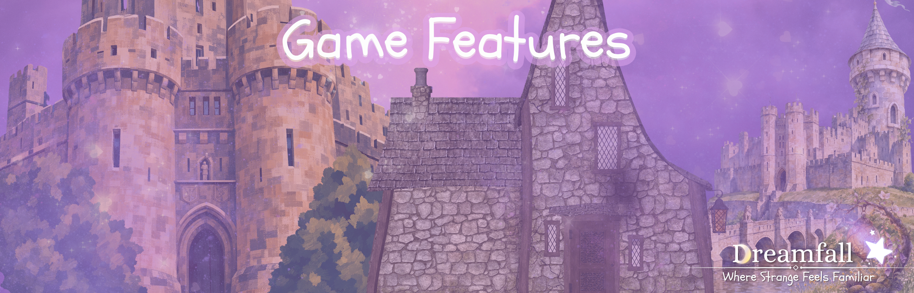

Dreamfall
Welcome to Dreamfall

About the game.
In Dreamfall...
There will be many to choose from and from different catagories. You can also combine race options to make a new one. From there you will be taken to a character customization menu where you will have in debth options to change your features. You will be able to change everything from eye color to how long your nails are. If you choose a quadraped race or a race with fur, scales or just multicolor skin, you will be able to customize its color, pattern textureand so forth. This game is based on several things like The series Dungeon Crawler by Matt Dinniman also, Alice in WonderlandSpecifically, the live action tim burton films. I'm still trying to decide if I will create this game using the Unity platform

- Character Creation
- In-Depth lore
- Party System
- Dungeons
About the Developer
Hello, I'm Autumn
As of 2026, I am currently enrolled at Chattanooga State Community College, where I am studying computer programming and marketing. I have always been interested in creativity, storytelling, and technology, and creating a game has been a dream of mine for a very long time.The idea for Dreamfall started as a simple dream of making my own game and gradually grew into something much bigger. I have always loved fantasy worlds, unique characters, and stories that allow people to escape into somewhere completely different from the real world. Reading Dungeon Crawler Carl helped me finally figure out what kind of game I wanted to create. The book's combination of dungeon crawling, adventure, humor, strange creatures, and a world that doesn't take itself too seriously inspired me to turn my original idea into a dungeon crawler. However, Dreamfall is my own interpretation of the genre. I wanted to create a world that combines the excitement and challenge of a dungeon crawler with a much more whimsical and dreamlike atmosphere. I have always loved the idea of taking something dark or dangerous and making it cute, colorful, and a little strange. This project is also an opportunity for me to take what I am learning in college and turn it into something tangible. As I continue learning programming, web development, and game design, I hope to keep expanding Dreamfall and bringing more of its world to life. What started as a dream of making a game has become a project that allows me to combine my interests in programming, storytelling, art, and world-building. Dreamfall is still a work in progress, but I hope that as the project grows, players will be able to experience the same sense of wonder and escape that inspired me to create it in the first place.